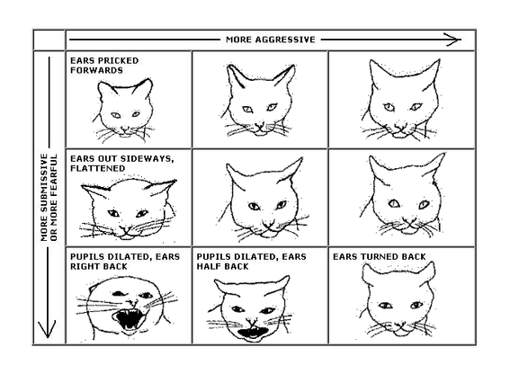

보통 고양이들은 다양한 행동을 통해 사람에게 친밀도나 여타 감정을 나타낸다. 그중 하나는 물론 '야옹'을 비롯한 다양한 발성이다.
그런데 흥미롭게도 고양이끼리는 거의 '야옹'을 하지 않는다. 야옹은 새끼 고양이가 자기 어미에게 내는 소리이며, 성묘가 된 후에는 다른 고양이에게 야옹을 거의 하지 않는다. 그런데 성묘들도 자기 주인을 비롯한 인간에게는 야옹 소리를 자주 낸다. (자주 내는 정도가 아니라, 인간과는 거의 야옹으로만 대화한다.) 고양이끼리는 야옹보다는 고양이의 이미지와 다른 특이한 소리를 주로 내며 의사표현을 한다. 물론, 그런 다른 소리를 인간에게 전혀 들려주지 않는 것은 아니라서, 고양이를 키우다 보면 야옹 이외 소리의 의미를 대강 알아듣게 되는 주인들도 많다.
사람과 만났을때 고양이가 꼬리를 하늘을 찌를 듯이 치솟고 다가온다면 그 사람과 만난 것을 매우 좋아한다는 의미이다. 이 상태에서 꼬리가 부르르 떨린다면 거의 희열을 느낄 정도로 기쁘다는 뜻. 서있을 때 꼬리를 축 내려놓고 있으면 기분이 그냥저냥이거나 별로라는 뜻이며, 앉거나 엎드려 있을때 꼬리를 심하면 탁탁 소리가 날 정도로 땅바닥에 두들기면 매우 심기가 안 좋다는 뜻이니 자리를 피해줘야된다. 호기심이 발동하면 꼬리를 중간 높이로 치솟고 끄트머리를 살랑살랑 흔든다. 순간적으로 깜짝 놀라거나 거의 패닉에 빠진 수준으로 겁에 질리면 등줄기서부터 꼬리까지 털이 치솟고 특히 꼬리의 털이 눈에 띄게 부풀어오른다. 다만 새끼 때는 이 놀란 듯한 혹은 화난 듯한 털부풀리고 꼬리 세우기 제스쳐를 할 때가 굉장히 많은데, 딱히 공격 의사를 보이는 건 아니고 장난을 치는 것이다. 새끼들끼리 싸움 혹은 사냥을 흉내내며 노는 것으로 추측되지만 정확한 이유는 불명.
사람과 대면한 고양이의 얼굴 중에 귀가 앞쪽을 향하고 있다면 이것은 그 사람과 만났다는 것을 좋아하고 있단 것이다. 귀를 상단으로 세워 똑바로 앉는 냥이들은 집중해 소리를 듣기 위한 행동으로, 사실 경계하는 것이나 다름 없는데 호기심이 많은 녀석들이라면 흥미가 발동했다 볼 수 있다. 그외 귀를 평평히 놓고 눈을 크게 뜨는 경우엔 무섭거나 불안한 증세인데, 이럴 땐 자리를 피해주자. 이게 더 심해지면 흔히 마징가 귀라고 불리는, 귀를 뒤로 V자가 되도록 젖힐 때가 있는데 크게 놀라거나 도망가거나, 갑자기 무슨 소리가 나는 등의 상황에서 보인다.